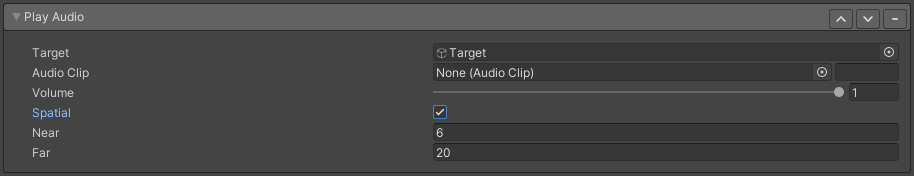

Play Audio
Warning
This feature is experimental and may change in the future.
VRChat has recently introduced the "Animator Play Audio" state behaviour. This feature will eventually be reworked to use that new more efficent feature.

Lets you play an audio clip when this action is turned ON.
- Target: GameObject reference specifying where the audio source should exist.
- Audio Clip: The audio you wish to play.
- Volume: Modifies the volume of the audio when it's played.
- Spatial: When enabled, the audio will play as though it's coming from the target object. This creates a directional audio source.
- Near: Distance from the target you need to be to hear the audio at 100%
- Far: Distance from the target in which the audio source lowers to 0%
Note
Each instance of the Play Audio option will create a new AudioSource component. VRChat doesn't allow this component on Quest, and only a limited amount on PC. Learn more here VRChat Docs - Avatar Performance Ranks